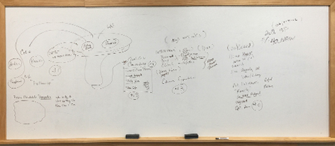
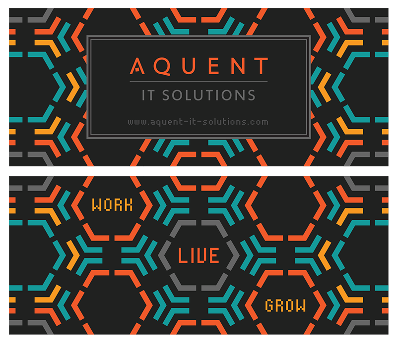
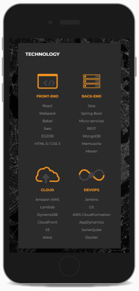
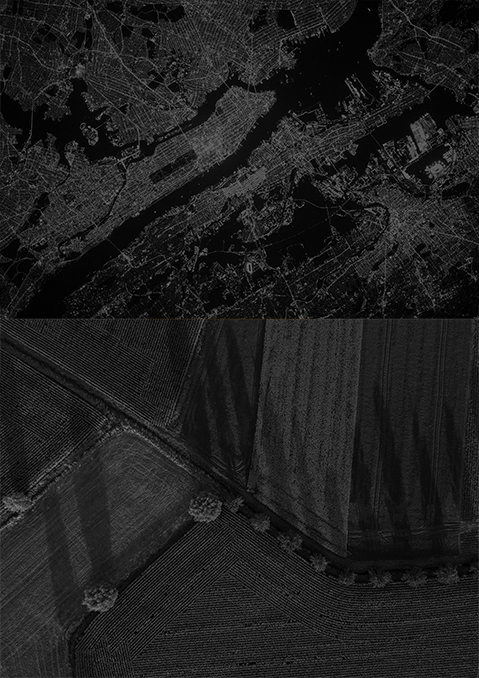

<!DOCTYPE html><html lang="en" id="top"><head><meta charset="UTF-8"/>
<meta name="viewport" content="width=device-width, initial-scale=1.0">
<meta http-equiv="X-UA-Compatible" content="IE=edge"/><title>Chris Norton: Designer</title><link rel="preconnect" href="https://fonts.googleapis.com">
<link rel="preconnect" href="https://fonts.gstatic.com" crossorigin><!--link(href='https://fonts.googleapis.com/css2?family=Open+Sans:wght@400;700&family=Source+Sans+3&display=swap', rel='stylesheet')--><link href="https://fonts.googleapis.com/css2?family=Arimo:ital,wght@0,400..700;1,400..700&amp;family=Source+Sans+3&amp;display=swap&amp;display=swap" rel="stylesheet"/><link rel="stylesheet" href="https://cdnjs.Cloudflare.com/ajax/libs/font-awesome/4.7.0/css/font-awesome.min.css"/><link rel="stylesheet" href="styles/styles-2025.css"/><script src="js/polyfill.min.js"></script></head></html><body><div class="wrapper bg-light-1"><div class="page"><header><h1>Christopher Norton</h1><nav><a href="index.html">Home</a><a href="index.html#projects">Projects</a><a href="#contactForm">Contact</a><a class="linkedin" href="https://www.linkedin.com/in/christopher-p-norton/" target="_blank"></a></nav></header><section class="bg-white"><div class="page-nav"><a class="back" href="index.html#projects"><svg width="24" height="24" viewBox="0 0 24 24" fill="none" xmlns="http://www.w3.org/2000/svg">
<path d="M20 18V20H13.5C9.91 20 7 17.09 7 13.5V7.83L3.91 10.92L2.5 9.5L8 4L13.5 9.5L12.09 10.91L9 7.83V13.5C9 16 11 18 13.5 18H20Z" fill="black"/>
</svg>Projects</a></div><div class="column-2"><p>Old Design</p><p>New Design</p></div><div class="content"><h2>Aquent</h2><p>Employee Recruiting Portal</p><div class="tags"><div class="tag ux">UX</div><div class="tag uxr">UXR</div><div class="tag ui">UI</div><div class="tag vis">Visual</div></div><h3>Impact</h3><p>Allowed the business to hire new talent on a faster timeline and to better communicate their key value proposition both externally and internally. They kept the updated website for 5+ years.</p><p></p></div></section><section class="bg-light-1"><div class="content"><div class="design-roadmap"><div class="overview"><h3>Design Roadmap</h3><p>Working in the newspaper industry early on drilled in the importance of the 5 W’s for writing a story but it’s a great foundation for project building too. It’s really difficult to design solutions and discuss trade-offs if you don’t know the context of the why, who, where or when. It’s also hard to know if it actually worked unless you answer the how.</p></div><div class="questions"><div class="question"><h6>Why</h6><ul><li>Why are we building this?</li><li>What problems are we trying to solve?</li></ul></div><div class="question"><h6>Who, Where, When</h6><ul><li>Who am I building this for?</li><li>Where and when and will it be used?</li></ul></div><div class="question"><h6>What</h6><ul><li>What solution are we building?</li><li>How do we prioritize solutions?</li></ul></div><div class="question"><h6>How</h6><ul><li>How can we measure impact and growth to validate the solution?</li></ul></div></div></div></div></section><section class="bg-dark-3"><div class="content"><h3>Why – Round 1</h3><p>Initially this project was going in circles and didn’t have a why if you can believe it. I was brought into a mix of department heads and developers pitching new features or reasons why people didn’t like the current site. Just a general sense of, “Make it more modern,” without having a clear goal of what the site is actually supposed to do. When you don’t know what’s wrong, it’s hard to see, but when you do it just feels like common sense that you need a goal before you can work towards accomplishing it.</p><h6>Goal</h6><p>It took several discussions to get consensus that the site should be focused on recruiting since candidates would frequently bail in the process after checking out the site.</p></div></section><section class="bg-white"><div class="content"><h3>Who, Where, When</h3><p>Knowing that our main user would be a candidate to be recruited by the staffing agency was helpful. Here’s how I went about generating starter data from almost nothing. Each artifact or step moved us toward better understanding and actual product.</p><h6>Personas</h6><p>With no existing personas I needed to do some generative research on candidates mainly front-end and back-end developers. I wrote up surveys for existing employees to find out a little more about why they chose Aquent and using the surveys I built an overview of common facts, problems, behaviors and goals. This would give context to friction points in the journey.</p><h6>What was learned</h6><p>A website can fix a lot of things, but it isn't going to prevent culture problems like burnout and mixed messaging between values, working environment, and daily activities. I can't change the actual building or run in-person events from just a website refresh. Those items were prioritized and offloaded from the scope of the website but I knew I needed to learn more about the overall journey if this was going to be successful.</p><p></p><h6>Journey and Business Ecosystem Mapping</h6><p>I was also able to find a VP familiar with the ecosystem and candidate journey and we mapped out the how the business generates revenue through recruiting and the candidate lifecycle. I then divided up the journey and grouped it into a loose AIDA model (Awareness —> Interest -> Desire -> Action) so we could visualize and empathize with the user's state of mind at each stage. Were the users just casually browsing or were they deeply engaged? Were they even seeing us? Were the common problems and goals listed in the persona research being answered to the point of having enough desire to take action?</p></div></section><section class="bg-dark-3"><div class="content"><h3>Why – Round 2</h3><p>After learning more about the user and their journey I finally had some real problems that needed solving.</p><h6>Company Culture</h6><p>Burnout and mixed messaging between values, working environment, and daily activities. Building décor or lack of in-person and team-building events.</p><h6>Hiring Process</h6><p>As it turned out the overall interview process was blocking the ability to hire in a timely manner.</p></div></section><section class="bg-white"><div class="content"><h3>What</h3><h6>Solution 1 – Recruiting process</h6><p>With HR I helped build a plan for improving the recruiting process and team culture including:</p><ul><li>Reducing the number of interview and vetting stages from 7 to 4.</li><li>Community outreach to connect mentors with aspiring developers</li><li>Planned more events like Hackathons</li><li>Updated printed materials and swag</li></ul><p></p><p></p><h6>Solution 2 – Website solutions</h6><p>We launched a few digital products including a new online video training portal and a recruiting site as part of a plan to better align the team environment and activities with the core business values. Individual landing pages allowed us better tracking for networking at events like job fairs and school visits.</p><p>I built the production site from zero including the copywriting, art direction, graphic design, imagery, motion graphics and the HTML/CSS/JS as well.</p><div class="column-2"><p>Technology section</p><div class="video-container"><video id="aquent-home" width="223" height="470" poster="video/aquent/aquent-home.jpg">
<source src="video/aquent/aquent-home.mp4" type="video/mp4">
</video></div></div><h6>Copywriting</h6><p>It was helpful to map out content and information architecture before building the visuals. I found the book "Letting Go of the Words" particularly helpful in rewriting all the copy for the website to address the problems and goals I found earlier in the persona discovery process like employee surveys. It was a lot easier to get buy-in when the conversation was able to go from, "Do you like this page?" to, "Does this section make it easier to understand what we make?</p><h6>Visual design</h6><p>I used Adobe Photoshop, Illustrator, and Sketch to create graphics and page layouts. Colors, fonts and grid system were matched against the parent company website.</p><p></p><p></p><h6>Imagery</h6><p>I defined example imagery to be used in the marketing materials, picking overhead drone photos to create the feeling of seeing the big picture through future tech which is exactly what we provide in our solutions to clients: technology-based solutions that work with large amounts of data at a digestible scale.</p><p></p><h6>Motion Graphics</h6><p>I drew up storyboards, animated motion graphics, and handled sound design for an internal video training library. The primary focus of this team is web development so a gear was used to show things, "working." Having the logo typed out creates familiarity with job tasks which included typing out and organizing code.</p><div class="video-container"><video width="768" height="514" poster="video/aquent/aquent-logo.jpg" controls="true">
<source src="video/aquent/aquent-logo.mp4" type="video/mp4">
</video></div><small>Intro built in After FX for new training hub</small><div class="video-container"><video width="768" height="514" poster="video/aquent/aquent-drumroll.jpg" controls="true">
<source src="video/aquent/aquent-drumroll.mp4" type="video/mp4">
</video></div><small>Slide built in After FX for presentation template</small><h6>Development</h6><p>I used HTML5/CSS3 and JavaScript to build out the designs and engineered a few node.js task runners to automatically generate compressed HTML/CSS from Sass and pug sources files. It also ran CSSlint and ESlint before pushing to git version control.</p></div></section><section class="bg-dark-3"><div class="content"><h3>How</h3><p>There are lots of ways to measure success. I established feedback loops and wrote short surveys given to candidates during on-boarding to give us some updated data on what was or wasn't attracting talent. Landing pages for job fairs and other events with CTAs for sending in resumes would also allow us to gauge interest from particular events over time. Overall recruiters could monitor if how many times they had to reach out to clients or how many candidates they were able to fill.</p><p>Internal review and user surveys from the new feedback loop were very positive. I got moved to other projects but metrics control was handed over to recruiters and the marketing team. They kept the updated design for 5+ years.</p></div><div class="page-nav"><a class="back" href="index.html#projects"><svg width="24" height="24" viewBox="0 0 24 24" fill="none" xmlns="http://www.w3.org/2000/svg">
<path d="M20 18V20H13.5C9.91 20 7 17.09 7 13.5V7.83L3.91 10.92L2.5 9.5L8 4L13.5 9.5L12.09 10.91L9 7.83V13.5C9 16 11 18 13.5 18H20Z" fill="white"/>
</svg>Projects</a></div></section></div></div><footer class="bg-light-4"><div class="about-me"><h6>Christopher Norton</h6><p>Senior designer with experience in UX/UI launching 26 new products and countless features for web and mobile in the last 10 years. Able to lead, execute, analyze, and iterate on products from start to finish for cross-functional and regionally diverse teams. Strong problem-solving skills and a design thinker with a proven track record in enterprise-level B2B, B2C and SaaS products for clients such as: <strong>Boeing</strong>, <strong>Dell</strong>, <strong>John Deere</strong>, <strong>Booz Allen</strong>, <strong>Animal Planet</strong>, <strong>The Learning Channel</strong>, and others.</p><small><strong>Hidden Gem</strong>: I also developed this site from scratch using HTML5, CSS3, and JS using Node.js to run a local preview server which compiles and minifies Sass on the fly with Autoprefixer, CSS Lint and ES Lint. Version control is run through Github pages. I have wide a wide range of skills enabling me to bridge the communication gap between business stakeholders, designers and engineering teams.</small></div><div class="social-links"><h4>Site</h4><a href="index.html">Home</a><a href="index.html#projects">Projects</a><a href="https://www.linkedin.com/in/christopher-p-norton/" target="_blank">LinkedIn</a></div><form method="post" name="contactForm" id="contactForm"><h6>Contact Me</h6><div class="form-group"><label for="fullName">Full Name</label><input name="fullName" id="fullName" type="text"/></div><div class="form-group"><label for="email">Email</label><input name="email" id="email" type="text"/></div><div class="form-group"><label for="message">Message</label><textarea name="message" id="message" rows="7"></textarea></div><div class="form-group"><button type="submit" id="submitContact">Send</button></div><div class="form-group"><small id="formStatus">Your message has been sent.</small></div></form></footer><script src="js/contact.js"></script></body>